1084B23 OIL PUMP CONTROL RETURN - R R
- Path
- Procedures > 10 ENGINE UNIT > 1084 ENGINE LUBRICATION SYSTEM > 1084B ENGINE OIL LUBRICATION CIRCUIT > 1084B23 OIL PUMP CONTROL RETURN - R R
- Kind
- repair procedure (removal / refitting; the operation number is the code)
- Applies to
- engines: 3.2 V6; all production periods
- Interactive page
- https://sloeber94.github.io/elrnDB-aGt/en/#/125001157
Applies to: engines: 3.2 V6; all production periods
 Removing
Removing
 Refitting
RefittingPosition the vehicle on a lift.
Make sure that the ignition key is in the OFF position, then disconnect the negative battery terminal (-)
Description | Connector | |
|---|---|---|
- | Battery | See A1B BATTERY ( BATTERY NEGATIVE ) |
Proceed with the removal
Op. 4450B04 RIGHT FRONT WHEEL R R.
Proceed with the removal
Op. 7055B64 LH OR RH REFLECTOR(ONE) ON REAR BUMPERS - R R.
Proceed with the removal
Op. 7055B54 UNDER-ENGINE GUARD - R R.
Proceed with the removal
Op. 1092G10 SINGLE ENGINE BELT R R.
Proceed with the removal
Op. 1092A10 CRANKSHAFT SERVICES PULLEY - R.R..
Proceed with the removal
Op. 1032D12 TIMING SYSTEM PROTECTIVE COVER(S) - R + R.
Proceed with the removal
Op. 1016A42 LEFT HAND CYLINDER HEAD IGNITION COIL COVER - R+R.
Proceed with the removal
Op. 5510C16 LEFT HAND CYLINDER HEAD IGNITION COIL - R+R.
Proceed with the removal
Op. 1016A30 LEFT CAM COVER - R + R AND REPLACE GASKET.
Proceed with the removal
Op. 1072B50 SLEEVES CONNECTING AIR CAPACITY BOX TO INLET MANIFOLD IS - R+R.
Proceed with the removal
Op. 5510C18 RIGHT HAND CYLINDER HEAD IGNITION COIL - R+R.
Proceed with the removal
Op. 1016A34 RIGHT-HAND CAM COVER - R + R AND REPLACE GASKET.
Proceed with the removal
Op. 1032B10 TOOTHED TIMING BELT - R + R FOR TIMING ADJUSTMENT OR REPLACEMENT.
Proceed with the removal
Op. 1076B82 LEFT EXHASUST PIPE BETWEEN CATALYTIC PRECONVERTER AND CONVERTER R R.
Proceed with the removal
Op. 5510C34 RPM AND TIMING SENSOR (SINGLE) - R+R.
Proceed with the removal
Op. 1020A20 CRANK CASE OIL SUMP - R + R CLEAN SEALS FOR SEALANT APPLICATION.
1. Undo the bolts (1a) and remove the alternator (1b) as much as necessary.
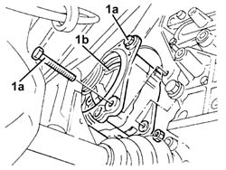
Applies to: engines: 3.2 V6; all production periods
Release the electrical wiring from the bands on the alternator spacer.
1. Unscrew the bolt securing the right rear timing belt cover to the alternator spacer.
2. Undo the bolts (2a) and remove the alternator spacer (2b).
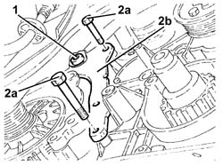
Applies to: engines: 3.2 V6; all production periods
1. Undo the bolt fixing the engine oil pump drive chain and idler gears to the engine oil pump.
2. Release the engine oil pump drive chain and idler gears (2a) from the engine oil pump using the tool (2b).
Description | Code | |
|---|---|---|
2b | Extractor | 1.860.954.001 |
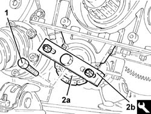
Applies to: engines: 3.2 V6; all production periods
1. Remove the toothed drive pulley
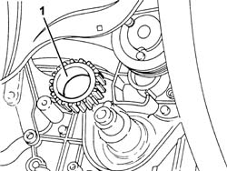
Applies to: engines: 3.2 V6; all production periods
1. Remove the crankshaft key using a suitable drift.
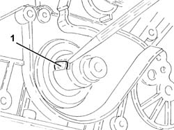
Applies to: engines: 3.2 V6; all production periods
1. Undo the bolts (1a) and remove the crankshaft oil seal front cover (1b) complete with oil seal.
Remove the gasket.
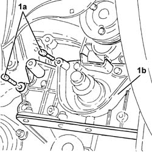
Applies to: engines: 3.2 V6; all production periods
1. Remove the oil pump idler gears and chain.
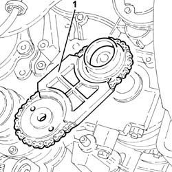
Applies to: engines: 3.2 V6; all production periods
Refitting
RemovingPlace the oil pump idler gears and chain in their housing.
Prise up the crankshaft front cover oil seal from the seat.
1. Place the crankcase front cover (1a), complete with gasket, back in its housing and secure it tightening the bolts (1b) to the recommended torque.
Fastening | Component | Ø | Value (daNm) | |
|---|---|---|---|---|
1b | Bolt | FRONT COVER CRANKSHAFT | M6 | (Engine crankcase side) 0.8 - 1.0 |
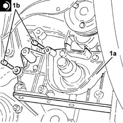
Applies to: engines: 3.2 V6; all production periods
1. Fit the a new crankshaft front oil seal (1a) using the tool (1b).
Description | Code | |
|---|---|---|
1b | Fitting tool | 1.860.949.000 |
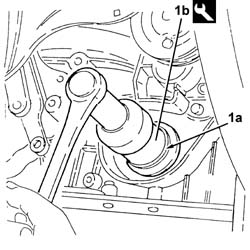
Applies to: engines: 3.2 V6; all production periods
Replace the key in the housing in the crankshaft.
Place the toothed drive pulley in its housing.
1. Place the oil pump drive chain and idler gears (1a) on the engine oil pump and secure it tightening the bolt (1b) to the recommended torque.
Fastening | Component | Ø | Value (daNm) | |
|---|---|---|---|---|
1b | Bolt | ENGINE OIL PUMP DRIVE CHAIN | M10 | (Engine oil pump side) 4.5 - 5.5 |
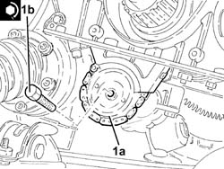
Applies to: engines: 3.2 V6; all production periods
Place the alternator spacer in its housing and secure it using the bolts.
Tighten the bolt securing the right rear timing belt cover to the alternator spacer.
Fasten the electrical wiring to the bands on the alternator spacer.
1. Place the alternator (1a) in its housing and fasten it tightening the bolts (1b) to the recommended torque.
Fastening | Component | Ø | Value (daNm) | |
|---|---|---|---|---|
1b | Bolt | ALTERNATOR ASSEMBLY | M8 | (Mount side) 2.3 - 2.8 |
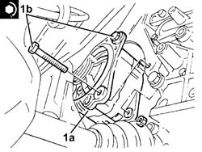
Applies to: engines: 3.2 V6; all production periods
Proceed with the refitting
Op. 1020A20 CRANK CASE OIL SUMP - R + R CLEAN SEALS FOR SEALANT APPLICATION.
Proceed with the refitting
Op. 5510C34 RPM AND TIMING SENSOR (SINGLE) - R+R.
Proceed with the refitting
Op. 1076B82 LEFT EXHASUST PIPE BETWEEN CATALYTIC PRECONVERTER AND CONVERTER R R.
Proceed with the refitting
Op. 1032B10 TOOTHED TIMING BELT - R + R FOR TIMING ADJUSTMENT OR REPLACEMENT.
Proceed with the refitting
Op. 1016A34 RIGHT-HAND CAM COVER - R + R AND REPLACE GASKET.
Proceed with the refitting
Op. 5510C18 RIGHT HAND CYLINDER HEAD IGNITION COIL - R+R.
Proceed with the refitting
Op. 1072B50 SLEEVES CONNECTING AIR CAPACITY BOX TO INLET MANIFOLD IS - R+R.
Proceed with the refitting
Op. 1016A30 LEFT CAM COVER - R + R AND REPLACE GASKET.
Proceed with the refitting
Op. 5510C16 LEFT HAND CYLINDER HEAD IGNITION COIL - R+R.
Proceed with the refitting
Op. 1016A42 LEFT HAND CYLINDER HEAD IGNITION COIL COVER - R+R.
Proceed with the refitting
Op. 1032D12 TIMING SYSTEM PROTECTIVE COVER(S) - R + R.
Proceed with the refitting
Op. 1092A10 CRANKSHAFT SERVICES PULLEY - R.R..
Proceed with the refitting
Op. 1092G10 SINGLE ENGINE BELT R R.
Proceed with the refitting
Op. 7055B64 LH OR RH REFLECTOR(ONE) ON REAR BUMPERS - R R.
Proceed with the refitting
Op. 4450B04 RIGHT FRONT WHEEL R R.
Refill the engine oil lubrication system
Op. 0010T11 ENGINE OIL CHECK LEVEL AND TOP UP.
Proceed with the refitting
Op. 7055B54 UNDER-ENGINE GUARD - R R.
Connect the negative battery terminal (-).
Remove the vehicle from the lift.
Topics linked from this page (17)
- 0010T11 ENGINE OIL CHECK LEVEL AND TOP UP
- 1016A30 LEFT CAM COVER - R + R AND REPLACE GASKET
- 1016A34 RIGHT-HAND CAM COVER - R + R AND REPLACE GASKET
- 1016A42 LEFT HAND CYLINDER HEAD IGNITION COIL COVER - R+R
- 1020A20 CRANK CASE OIL SUMP - R + R CLEAN SEALS FOR SEALANT APPLICATION
- 1032B10 TOOTHED TIMING BELT - R + R FOR TIMING ADJUSTMENT OR REPLACEMENT
- 1032D12 TIMING SYSTEM PROTECTIVE COVER(S) - R + R
- 1072B50 SLEEVES CONNECTING AIR CAPACITY BOX TO INLET MANIFOLD IS - R+R
- 1076B82 LEFT EXHASUST PIPE BETWEEN CATALYTIC PRECONVERTER AND CONVERTER R R
- 1092A10 CRANKSHAFT SERVICES PULLEY - R.R.
- 1092G10 SINGLE ENGINE BELT R R
- 4450B04 RIGHT FRONT WHEEL R R
- 5510C16 LEFT HAND CYLINDER HEAD IGNITION COIL - R+R
- 5510C18 RIGHT HAND CYLINDER HEAD IGNITION COIL - R+R
- 5510C34 RPM AND TIMING SENSOR (SINGLE) - R+R
- 7055B54 UNDER-ENGINE GUARD - R R
- 7055B64 LH OR RH REFLECTOR(ONE) ON REAR BUMPERS - R R